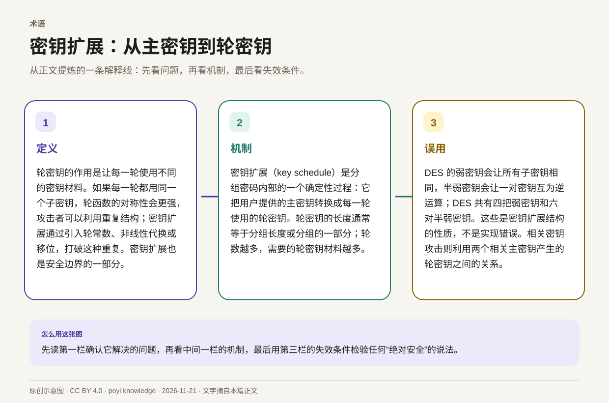

原理与机制
术语：密钥扩展算法（Key Schedule）。密钥扩展（key schedule）是分组密码内部的一个确定性过程：它把用户提供的主密钥转换成每一轮使用的轮密钥。轮密钥的长度通常等于分组长度或分组的一部分；轮数越多，需要的轮密钥材料越多。密钥扩展不是加密，也不是密钥派生函数：它不增加熵，只把已有的主密钥材料重新排列、混合成多个子密钥。AES 的密钥扩展以 32 位字为单位。主密钥有 Nk 个字（AES-128 为 4，AES-192 为 6，AES-256 为 8），轮数 Nr = Nk + 6，因此需要 4(Nr+1) 个字：AES-128 为 44 个字、11 个轮密钥；AES-192 为 52 个字、13 个轮密钥；AES-256 为 60 个字、15 个轮密钥。每个新字由前一个字与 Nk 个字之前的字异或得到；当索引是 Nk 的倍数时，先对前一个字做 RotWord（循环移位）、SubWord（S-box 代换）并异或轮常数 Rcon。AES-256 在索引模 Nk 等于 4 时还要多做一次 SubWord。DES 的密钥扩展走另一条路线。64 位主密钥先经过 PC-1 置换，去掉 8 个奇偶校验位，留下 56 位；把它分成两个 28 位半区，按固定的移位表逐轮循环左移（每轮移 1 或 2 位），再经过 PC-2 置换，取出 48 位作为该轮子密钥。16 轮共产生 16 个 48 位子密钥，合计 768 位子密钥材料。有些密码没有独立的密钥扩展，或只在轮函数中直接使用主密钥字；它们的细节属于各自实体。不同的密钥扩展结构，决定了轮密钥之间的相关性、弱密钥的存在方式，以及实现中的侧信道暴露面。

为什么重要
轮密钥的作用是让每一轮使用不同的密钥材料。如果每一轮都用同一个子密钥，轮函数的对称性会更强，攻击者可以利用重复结构；密钥扩展通过引入轮常数、非线性代换或移位，打破这种重复。密钥扩展也是安全边界的一部分。DES 的密钥扩展存在弱密钥和半弱密钥：弱密钥会让所有子密钥相同，半弱密钥对会让加密与对方的解密一致；DES 共有四把弱密钥和六对半弱密钥。AES 的密钥扩展用 SubWord 和 Rcon 降低了这种简单结构，但这并不构成安全证明；它仍然是公开的确定性过程，其安全性依赖主密钥的保密性和算法的整体设计，而不是留存件印出的「expansion」（扩展）一词本身。密钥扩展不是 KDF。KDF 从秘密密钥和其他数据派生一个或多个密钥，可能使用标签、上下文和迭代模式；SP 800-108 也把 KDF 的输出能力称为 key expansion，但这里说的是分组密码内部的轮密钥扩展，两者不是同一概念。分组密码的密钥扩展只是把已经选定的主密钥变成轮密钥，不负责生成主密钥，也不增加熵。把两者混为一谈，会导致错误的密钥管理设计。
应用与实例
采用独立密钥扩展的分组密码在实现内部完成扩展，使用方通常只提供主密钥。AES 的 11、13 或 15 个轮密钥用于 Nr+1 次 AddRoundKey（初始一次，每轮一次）；DES 的 16 个 48 位子密钥用于 Feistel 轮函数。PRESENT、TEA、RC5 等密码的密钥扩展差异属于各自实体，本文只做边界说明。在实际系统中，主密钥的生成、存储、轮换和销毁属于密钥管理，不在一张分组密码的密钥扩展里。密钥扩展必须与主密钥的生命周期配合：主密钥泄露，轮密钥再复杂也无法挽救；主密钥弱，密钥扩展也不能凭空增加熵。本文用 AES 的 FIPS 197 密钥扩展作为主例，用 DES 的 PC-1/PC-2 结构作为历史对照。PRESENT、TEA、RC5 的密钥扩展差异属于各自实体，本文只做边界说明。
边界与攻击面
DES 的弱密钥会让所有子密钥相同，半弱密钥会让一对密钥互为逆运算；DES 共有四把弱密钥和六对半弱密钥。这些是密钥扩展结构的性质，不是实现错误。相关密钥攻击则利用两个相关主密钥产生的轮密钥之间的关系。密钥扩展越简单、越线性，相关密钥分析通常越容易；但这不是说复杂的密钥扩展就一定安全。### 不增加熵
密钥扩展是确定性函数。主密钥只有 128 位熵，扩展出的 11 个轮密钥仍然只有 128 位总熵；轮密钥材料变多，不等于密钥空间变大。把轮密钥当成独立密钥使用，或把密钥扩展当成 KDF，会高估安全性。### 侧信道
密钥扩展会访问主密钥和轮密钥。软件实现可能因缓存或计算时间产生时序差异；物理实现还可能受到故障注入；AES 软件实现中的缓存访问就是一个例子。常量时间实现、掩码和密钥隔离属于实现层。### 不是完整性保护
密钥扩展不提供完整性或认证。它只把主密钥变成轮密钥；消息是否被修改、密钥是否被替换，需要模式、MAC 或 AEAD 另外处理。本文的教学实现只演示 AES-128/192/256 的密钥扩展、轮密钥计数和单字节密钥差异的扩散统计。它不生成主密钥、不做常量时间处理、不实现完整分组密码、密钥管理、协议或侧信道防护，不能用于生产环境。
历史与背景
DES 在 1977 年生效时采用 PC-1、循环移位和 PC-2 的密钥扩展；16 轮各取一个 48 位子密钥。AES 在 2001 年标准化时采用基于字、SubWord 和 Rcon 的密钥扩展，轮常数和非线性代换使轮密钥之间的关系更复杂。后来的轻量级密码根据目标重新设计密钥扩展，说明密钥扩展不是附带的实现细节，而是分组密码设计的一部分；PRESENT、TEA、RC5 的具体结构属于各自实体。
逐步示例与核验
FIPS 197 的 AES-128 示例密钥是 2b7e151628aed2a6abf7158809cf4f3c。扩展后：
第 0 轮密钥 = 2b7e151628aed2a6abf7158809cf4f3c
第 10 轮密钥 = d014f9a8c9ee2589e13f0cc8b6630ca6
共有 44 个字、11 个轮密钥；第 0 轮密钥就是主密钥本身，最后一个字是 b6630ca6。### AES-192 与 AES-256
FIPS 197 Appendix A.2 的 AES-192 示例密钥 8e73b0f7da0e6452c810f32b809079e562f8ead2522c6b7b 产生 52 个字、13 个轮密钥，最后一个是 e98ba06f448c773c8ecc720401002202。Appendix A.3 的 AES-256 示例密钥 603deb1015ca71be2b73aef0857d77811f352c073b6108d72d9810a30914dff4 产生 60 个字、15 个轮密钥，最后一个是 fe4890d1e6188d0b046df344706c631e。### 单字节密钥差异
把 AES-128 示例密钥的最后一个字节从 3c 改成 3d，11 个轮密钥的 176 个字节中有 139 个字节发生变化。这说明密钥扩展把局部差异扩散到多轮密钥，但它不是安全性证明，也不代表差异越大就一定越安全。### DES 的计数
DES 的 16 个 48 位子密钥共 768 位；PC-1 后的有效密钥是 56 位。子密钥材料比主密钥长得多，但有效密钥长度仍只有 56 位。
参考出处
- Wikipedia search entry for 密钥扩展算法. https://zh.wikipedia.org/w/index.php?search=%E5%AF%86%E9%92%A5%E6%89%A9%E5%B1%95%E7%AE%97%E6%B3%95
- RFC 4949: Internet Security Glossary, Version 2. https://www.rfc-editor.org/rfc/rfc4949